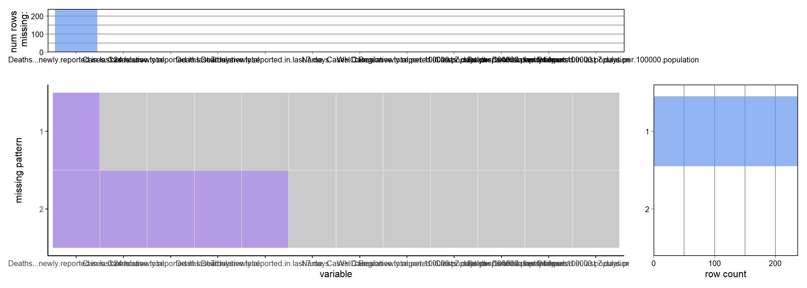
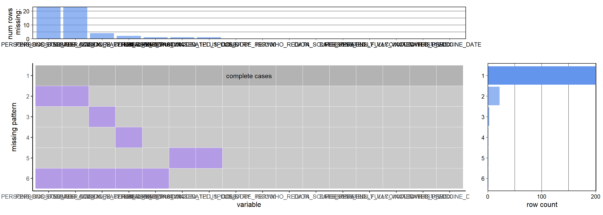

Chapter 3 Data
3.1 Sources
As we mentioned in Chapter 2, we will focus on four data sets published by WTO. Here are the description of them. Our data are downloaded from the WHO Coronavirus (COVID-19) Dashboard website on Dec. 13, 2022.
3.1.1 Daily cases and deaths by date reported to WHO
This data set is designed to show the spread of covid-19 virus in countries, territories, and areas around the world from January 2020 to the present (It should be noticed that in our project we get records until Dec. 13, 2022). It contains 8 columns, whose detail descriptions are shown below.
| Field name | Type | Description |
|---|---|---|
| Date_reported | Date | Date of reporting to WHO |
| Country_code | String | ISO Alpha-2 country code |
| Country | String | Country, territory, area |
| WHO_region | String | WHO regional offices: WHO Member States are grouped into six WHO regions – Regional Office for Africa (AFRO), Regional Office for the Americas (AMRO), Regional Office for South-East Asia (SEARO), Regional Office for Europe (EURO), Regional Office for the Eastern Mediterranean (EMRO), and Regional Office for the Western Pacific (WPRO). |
| New_cases | Integer | New confirmed cases. Calculated by subtracting previous cumulative case count from current cumulative cases count.* |
| Cumulative_cases | Integer | Cumulative confirmed cases reported to WHO to date. |
| New_deaths | Integer | New confirmed deaths. Calculated by subtracting previous cumulative deaths from current cumulative deaths.* |
| Cumulative_deaths | Integer | Cumulative confirmed deaths reported to WHO to date. |
daily_case <- read.csv(file="./data/WHO-COVID-19-global-data.csv")
# Brief view of the data.
head(daily_case)## Date_reported Country_code Country WHO_region New_cases Cumulative_cases
## 1 2020-01-03 AF Afghanistan EMRO 0 0
## 2 2020-01-04 AF Afghanistan EMRO 0 0
## 3 2020-01-05 AF Afghanistan EMRO 0 0
## 4 2020-01-06 AF Afghanistan EMRO 0 0
## 5 2020-01-07 AF Afghanistan EMRO 0 0
## 6 2020-01-08 AF Afghanistan EMRO 0 0
## New_deaths Cumulative_deaths
## 1 0 0
## 2 0 0
## 3 0 0
## 4 0 0
## 5 0 0
## 6 0 0# See the number of countries, territories, and areas.
cat("The number of conuntries, territories, and areas recorded: ",length(unique(daily_case$Country)))## The number of conuntries, territories, and areas recorded: 237# See the beginning date and ending date of the records.
print(paste0("The last day of records: ", max(as.Date(daily_case$Date_reported))))
print(paste0("The first day of records: ", min(as.Date(daily_case$Date_reported))))## [1] "The last day of records: 2022-12-13"## [1] "The first day of records: 2020-01-03"According to the brief view of the data, it is tidy, which means that:
- Every column is a variable.
- Every row is an observation.
- Every cell is a single value.
It contains daily information of 237 countries, territories, and areas from 2020-01-03 to 2022-12-13.
3.1.2 Latest reported counts of cases and deaths
Different from the data set of daily cases and deaths, this data set focus on the reported cases and deaths in the recent period (recent 7 days, and recent 24 hours). It contains 12 columns, and here are the descriptions of them.
| Field name | Type | Description |
|---|---|---|
| Name | String | Country, territory, area |
| WHO_region | String | WHO Region |
| Cases - cumulative total | Integer | Cumulative confirmed cases reported to WHO to date. |
| Cases - cumulative total per 100000 population | Decimal | Cumulative confirmed cases reported to WHO to date per 100,000 population. |
| Cases - newly reported in last 7 days | Integer | New confirmed cases reported in the last 7 days. Calculated by subtracting previous cumulative case count (8 days prior) from current cumulative cases count. |
| Cases - newly reported in last 7 days per 100000 population | Decimal | New confirmed cases reported in the last 7 days per 100,000 population. |
| Cases - newly reported in last 24 hours | Integer | New confirmed cases reported in the last 24 hours. Calculated by subtracting previous cumulative case count from current cumulative cases count. |
| Deaths - cumulative total | Integer | Cumulative confirmed deaths reported to WHO to date. |
| Deaths - cumulative total per 100000 population | Decimal | Cumulative confirmed deaths reported to WHO to date per 100,000 population. |
| Deaths - newly reported in last 7 days | Integer | New confirmed deaths reported in the last 7 days. Calculated by subtracting previous cumulative death count (8 days prior) from current cumulative deaths count. |
| Deaths - newly reported in last 7 days per 100000 population | Decimal | New confirmed deaths reported in the last 7 days per 100,000 population. |
| Deaths - newly reported in last 24 hours | Integer | New confirmed deaths reported in the last 24 hours. Calculated by subtracting previous cumulative death count from current cumulative deaths count. |
reccent_case <- read.csv(file="./data/WHO-COVID-19-global-table-data.csv")
# Brief view of the data.
head(reccent_case)## Name WHO.Region Cases...cumulative.total
## Global 645630482 8283.112
## United States of America Americas 98072469 29628.907
## India South-East Asia 44675095 3237.315
## France Europe 37433359 57554.932
## Germany Europe 36812671 44263.709
## Brazil Americas 35577538 16737.691
## Cases...cumulative.total.per.100000.population
## Global 3261885
## United States of America 448634
## India 1312
## France 434884
## Germany 190185
## Brazil 208433
## Cases...newly.reported.in.last.7.days
## Global 41.84833
## United States of America 135.53800
## India 0.09500
## France 668.64700
## Germany 228.67900
## Brazil 98.05900
## Cases...newly.reported.in.last.7.days.per.100000.population
## Global 192915
## United States of America 0
## India 114
## France 10878
## Germany 33590
## Brazil 6777
## Cases...newly.reported.in.last.24.hours
## Global 6634816
## United States of America 1074367
## India 530658
## France 156247
## Germany 159177
## Brazil 690754
## Deaths...cumulative.total
## Global 85.12132
## United States of America 324.58000
## India 38.45300
## France 240.23500
## Germany 191.39500
## Brazil 324.97000
## Deaths...cumulative.total.per.100000.population
## Global 9502
## United States of America 2934
## India 25
## France 623
## Germany 105
## Brazil 630
## Deaths...newly.reported.in.last.7.days
## Global 0.1219058
## United States of America 0.8860000
## India 0.0020000
## France 0.9580000
## Germany 0.1260000
## Brazil 0.2960000
## Deaths...newly.reported.in.last.7.days.per.100000.population
## Global 645
## United States of America 0
## India 0
## France 167
## Germany 14
## Brazil 7
## Deaths...newly.reported.in.last.24.hours
## Global NA
## United States of America NA
## India NA
## France NA
## Germany NA
## Brazil NA# See the number of countries, territories, and areas.
cat("The number of conuntries, territories, and areas recorded: ",length(unique(reccent_case$WHO.Region))-1)## The number of conuntries, territories, and areas recorded: 235According to the brief view of the data set, this data set is tidy as well. Since it focuses on the recent cases, there is no column about the record date. Another thing that should be noticed is that the number of countries, territories, and areas is different from the last data set.
3.1.3 Vaccination data
This data set shows the vaccination status of covid-19 in different countries, territories, and areas. The descriptions of the 12 columns are shown below.
| Field name | Type | Description |
|---|---|---|
| COUNTRY | String | Country, territory, area |
| ISO3 | String | ISO Alpha-3 country code |
| WHO_REGION | String | WHO regional offices: WHO Member States are grouped into six WHO regions: Regional Office for Africa (AFRO), Regional Office for the Americas (AMRO), Regional Office for South-East Asia (SEARO), Regional Office for Europe (EURO), Regional Office for the Eastern Mediterranean (EMRO), and Regional Office for the Western Pacific (WPRO). |
| DATA_SOURCE | String | Indicates data source: - REPORTING: Data reported by Member States, or sourced from official reports - OWID: Data sourced from Our World in Data: https://ourworldindata.org/covid-vaccinations |
| DATE_UPDATED | Date | Date of last update |
| TOTAL_VACCINATIONS | Integer | Cumulative total vaccine doses administered |
| PERSONS_VACCINATED_1PLUS_DOSE | Decimal | Cumulative number of persons vaccinated with at least one dose |
| TOTAL_VACCINATIONS_PER100 | Integer | Cumulative total vaccine doses administered per 100 population |
| PERSONS_VACCINATED_1PLUS_DOSE_PER100 | Decimal | Cumulative persons vaccinated with at least one dose per 100 population |
| PERSONS_FULLY_VACCINATED | Integer | Cumulative number of persons fully vaccinated |
| PERSONS_FULLY_VACCINATED_PER100 | Decimal | Cumulative number of persons fully vaccinated per 100 population |
| VACCINES_USED | String | Combined short name of vaccine: “Company - Product name” (see below) |
| FIRST_VACCINE_DATE | Date | Date of first vaccinations. Equivalent to start/launch date of the first vaccine administered in a country. |
| NUMBER_VACCINES_TYPES_USED | Integer | Number of vaccine types used per country, territory, area |
| PERSONS_BOOSTER_ADD_DOSE | Integer | Persons received booster or additional dose |
| PERSONS_BOOSTER_ADD_DOSE_PER100 | Decimal | Persons received booster or additional dose per 100 population |
vcc <- read.csv(file = "./data/vaccination-data.csv")
# Brief view of the data.
head(vcc)## COUNTRY ISO3 WHO_REGION DATA_SOURCE DATE_UPDATED TOTAL_VACCINATIONS
## 1 Afghanistan AFG EMRO REPORTING 2022-12-05 12304901
## 2 Albania ALB EURO REPORTING 2022-11-27 3017443
## 3 Algeria DZA AFRO REPORTING 2022-09-04 15267442
## 4 American Samoa ASM WPRO REPORTING 2022-08-23 111316
## 5 Andorra AND EURO REPORTING 2022-11-13 154367
## 6 Angola AGO AFRO REPORTING 2022-12-04 23468138
## PERSONS_VACCINATED_1PLUS_DOSE TOTAL_VACCINATIONS_PER100
## 1 11320910 31.609
## 2 1341413 104.900
## 3 7840131 34.817
## 4 44885 201.670
## 5 57901 199.800
## 6 14887847 71.405
## PERSONS_VACCINATED_1PLUS_DOSE_PER100 PERSONS_FULLY_VACCINATED
## 1 29.081 10615628
## 2 47.134 1269112
## 3 17.879 6481186
## 4 81.318 41423
## 5 76.009 53485
## 6 45.298 8193976
## PERSONS_FULLY_VACCINATED_PER100
## 1 27.270
## 2 44.594
## 3 14.780
## 4 75.046
## 5 70.211
## 6 24.931
## VACCINES_USED
## 1 AstraZeneca - Vaxzevria,Beijing CNBG - BBIBP-CorV,Bharat - Covaxin,CanSino - Convidecia,Gamaleya - Gam-Covid-Vac,Gamaleya - Sputnik-Light,Janssen - Ad26.COV 2-S,Moderna - Spikevax,Pfizer BioNTech - Comirnaty,SII - Covishield,Sinovac - CoronaVac
## 2 AstraZeneca - Vaxzevria,Gamaleya - Gam-Covid-Vac,Pfizer BioNTech - Comirnaty,SII - Covishield,Sinovac - CoronaVac
## 3 Beijing CNBG - BBIBP-CorV,Gamaleya - Gam-Covid-Vac,SII - Covishield,Sinovac - CoronaVac
## 4 Janssen - Ad26.COV 2-S,Moderna - Spikevax,Pfizer BioNTech - Comirnaty
## 5 AstraZeneca - Vaxzevria,Moderna - Spikevax,Pfizer BioNTech - Comirnaty
## 6 SII - Covishield
## FIRST_VACCINE_DATE NUMBER_VACCINES_TYPES_USED PERSONS_BOOSTER_ADD_DOSE
## 1 2021-02-22 11 NA
## 2 2021-01-13 5 373263
## 3 2021-01-30 4 575651
## 4 2020-12-21 3 24160
## 5 2021-01-20 3 42981
## 6 2021-03-10 1 1368465
## PERSONS_BOOSTER_ADD_DOSE_PER100
## 1 NA
## 2 13.116
## 3 1.313
## 4 43.770
## 5 56.423
## 6 4.164# See the number of countries, territories, and areas.
cat("The number of conuntries, territories, and areas recorded: ",length(unique(vcc$COUNTRY)))## The number of conuntries, territories, and areas recorded: 229The number of countries, territories, and areas is less than the total number of members of WHO, which means that some places still lack vaccine.
3.1.4 Vaccination metadata
This data set is smaller than the last one and does not provide information about the vaccination population. Here are the detail descriptions about the 10 columns.
| Field name | Type | Description |
|---|---|---|
| ISO3 | String | ISO Alpha-3 country code |
| VACCINE_NAME | String | Combined short name of vaccine: “Company - Product name” (see below) |
| PRODUCT_NAME | String | Name or label of vaccine product, or type of vaccine (if unnamed). |
| COMPANY_NAME | String | Marketing authorization holder of vaccine product. |
| FIRST_VACCINE_DATE | Date | Date of first vaccinations. Equivalent to start/launch date of the first vaccine administered in a country. |
| AUTHORIZATION_DATE | Date | Date vaccine product was authorised for use in the country, territory, area. |
| START_DATE | Date | Start/launch date of vaccination with vaccine type (excludes vaccinations during clinical trials). |
| END_DATE | Date | End date of vaccine rollout |
| COMMENT | String | Comments related to vaccine rollout |
| DATA_SOURCE | String | Indicates data source - REPORTING: Data reported by Member States, or sourced from official reports - OWID: Data sourced from Our World in Data: https://ourworldindata.org/covid-vaccinations |
vcc_meta <- read.csv(file = "./data/vaccination-metadata.csv")
# Brief view of the data.
head(vcc_meta)## ISO3 VACCINE_NAME PRODUCT_NAME COMPANY_NAME
## 1 SHN AstraZeneca - AZD1222 AZD1222 AstraZeneca
## 2 GRL Moderna - mRNA-1273 mRNA-1273 Moderna
## 3 FRO Moderna - mRNA-1273 mRNA-1273 Moderna
## 4 FRO Pfizer BioNTech - Comirnaty Comirnaty Pfizer BioNTech
## 5 BIH AstraZeneca - AZD1222 AZD1222 AstraZeneca
## 6 BIH Pfizer BioNTech - Comirnaty Comirnaty Pfizer BioNTech
## AUTHORIZATION_DATE START_DATE END_DATE COMMENT DATA_SOURCE
## 1 NA NA OWID
## 2 NA NA OWID
## 3 NA NA OWID
## 4 NA NA OWID
## 5 NA NA OWID
## 6 NA NA OWID# See the number of countries, territories, and areas.
cat("The number of conuntries, territories, and areas recorded: ",length(unique(vcc_meta$ISO3)))## The number of conuntries, territories, and areas recorded: 2253.2 Cleaning / transformation
Since the data sets we use are all tidy, we do not neet to clean and transform it anymore. However, in the next chapter, we need use monthly information. Therefore, we create a monthly reported cases and deaths data set from the WHO-COVID-19-global-data.csv.
library(lubridate)
library(tidyverse)
library(redav)
daily_case$month = format(as.Date(daily_case$Date_reported, format = "%Y-%m-%d"), "%y-%m")
month_case <- daily_case %>%
group_by(WHO_region, Country_code, Country, month) %>%
summarize(
New_cases = sum(New_cases),
New_deaths = sum(New_deaths),
Cumulative_cases = max(Cumulative_cases),
Cumulative_deaths = max(Cumulative_deaths),
)
write.csv(month_case, file = "./data/monthly_data.csv")3.3 Missing value analysis
daily_case_na = sum(is.na(daily_case))
reccent_case_na = sum(is.na(reccent_case))
vcc_na = sum(is.na(vcc))
vcc_meta_na = sum(is.na(vcc_meta))
print(paste0("The number of missing values in daily reported and death data set: ", daily_case_na))
print(paste0("The number of missing values in reccent reported and death data set: ", reccent_case_na))
print(paste0("The number of missing values in vaccination data set: ", vcc_na))
print(paste0("The number of missing values in vaccination meat-data set: ", vcc_meta_na))## [1] "The number of missing values in daily reported and death data set: 1076"## [1] "The number of missing values in reccent reported and death data set: 242"## [1] "The number of missing values in vaccination data set: 55"## [1] "The number of missing values in vaccination meat-data set: 2142"Basically, vaccination meta-data set has the most missing values.
plot_missing(month_case, percent = FALSE)There is only some country codes missing in WHO-COVID-19-global-data.csv, because some member of WHO are not a country. Those missing values will not influence our exploration.
plot_missing(reccent_case, percent = FALSE)
Most of the missing values belong to Deaths...newly.report. This is because some countries have no reccent deaths or do not care about covid-19 anymore. Those missing values will not influence our exploration.
plot_missing(vcc, percent = FALSE)
The data of most rows in vaccination-data.csv are complete.
plot_missing(vcc_meta, percent = FALSE)All of the values of END_DATE and COMMENT are missing, but since we do not analysis text data, those missing values will not influence our exploration.